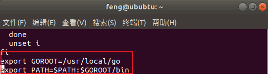

在Linux上安装Go语言开发包
提示：阅读本节需要对 Linux 系统及常用的命令有一定的了解，感兴趣的读者可以通过阅读《Linux入门教程》来了解更多 Linux 相关的知识。
注意：开发包有 32 位和 64 位两个版本，需要根据读者电脑的情况选择不同的版本。
接下来将带领大家一步步的完成安装过程。安装Go语言开发包
首先，复制Go语言开发包的下载链接（https://dl.google.com/go/go1.13.4.linux-amd64.tar.gz）。然后，在终端使用cd 命令进入你用来存放安装包的目录中（这里使用的是 /usr/local/ 目录，读者也可以使用其它目录）。
root@ububtu:~# cd /usr/local/
root@ububtu:/usr/local#
wget 命令下载Go语言开发包，如下所示。
root@ububtu:/usr/local# wget https://dl.google.com/go/go1.13.4.linux-amd64.tar.gz
--2019-11-06 10:47:23-- https://dl.google.com/go/go1.13.4.linux-amd64.tar.gz
正在解析主机 dl.google.com (dl.google.com)... 203.208.39.196, 203.208.39.193, 203.208.39.200, ...
正在连接 dl.google.com (dl.google.com)|203.208.39.196|:443... 已连接。
已发出 HTTP 请求，正在等待回应... 200 OK
长度： 120054682 (114M) [application/octet-stream]
正在保存至: “go1.13.4.linux-amd64.tar.gz”
go1.13.4.linux 43% 49.44M 3.56MB/s 剩余 16s ^go1.13.4.linux 100% 114.49M 4.73MB/s 用时 31s
2019-11-06 10:47:56 (3.67 MB/s) - 已保存 “go1.13.4.linux-amd64.tar.gz” [120054682/120054682])
tar 命令解压刚刚下载的Go语言开发包。
root@ububtu:/usr/local# tar -C /usr/local -xzf go1.13.4.linux-amd64.tar.gz
解压成功后会在当前目录下新增一个 go 目录，至此我们的Go语言开发包就安装完成了，使用cd 命令进入该目录，然后执行bin/go version 命令就可以查看当前Go语言的版本了。
root@ububtu:/usr/local/go# bin/go version
go version go1.13.4 linux/amd64
配置环境变量
我们需要配置 2 个环境变量分别是 GOROOT 和 PATH。- GOROOT 的值应该为Go语言的当前安装目录：export GOROOT=/usr/local/go
- PATH 为了方便使用Go语言命令和 Go 程序的可执行文件，需要追加其值：export PATH=$PATH:$GOROOT/bin:$GOBIN
为了方便以后的使用，需要把这几个环境变量添加 profile 文件中（~/.bash_profile 或 /etc/profile）。如果是单用户使用，可以将环境变量添加在 home 目录下的 bash_profile 文件中，如果是多用户使用，需要添加在 /etc/profile 文件。（推荐大家在 /etc/profile 文件中设置环境变量）
使用
vi /etc/profile 命令打开 profile 文件，并将环境变量添加到文件末尾。
添加完成后使用
:wq 命令保存并退出。然后，使用
source /etc/profile 命令使配置文件生效，现在就可以在任意目录使用Go语言命令了。
验证安装
在任意目录下使用终端执行 go env 命令，输出如下结果说明Go语言开发包已经安装成功。
root@ububtu:~$ go env
GO111MODULE=""
GOARCH="amd64"
GOBIN=""
GOCACHE="/home/feng/.cache/go-build"
GOENV="/home/feng/.config/go/env"
GOEXE=""
GOFLAGS=""
GOHOSTARCH="amd64"
GOHOSTOS="linux"
GONOPROXY=""
GONOSUMDB=""
GOOS="linux"
GOPATH="/home/feng/go"
GOPRIVATE=""
GOPROXY="https://proxy.golang.org,direct"
GOROOT="/usr/local/go"
GOSUMDB="sum.golang.org"
GOTMPDIR=""
. . .
提示：上面只显示了部分结果。
关注公众号「站长严长生」，在手机上阅读所有教程，随时随地都能学习。内含一款搜索神器，免费下载全网书籍和视频。

微信扫码关注公众号